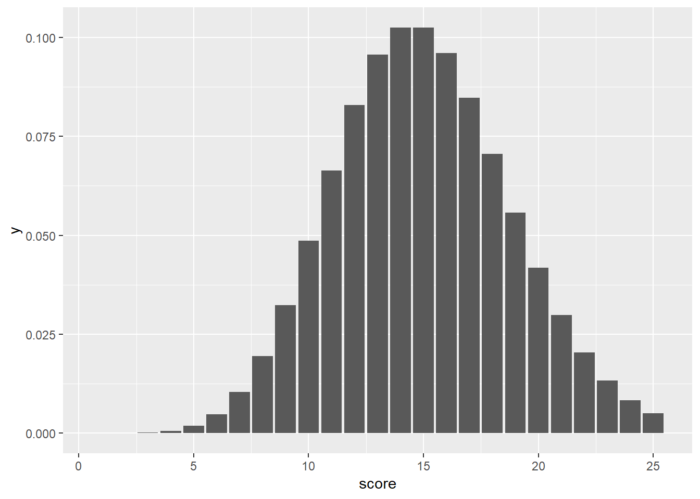

Chapter 8 Data Classification
library(datapasta)
library(tidyverse)The starting point in any experimental design is to understand the types of data that are involved. Ask yourself whether the variables are discrete or continuous. Then ask if they measured, ordered or sorted?
If you don’t understand those two questions, just read on.
Because those answers will point you in the proper analytical direction.
This is one of the most important things to learn in this course. If you don’t get the concept that not all data types are equivalent, you won’t get statistics. You’ll be flying by the seat of your pants when it comes time to designing and analyzing experiments.
In this section data classification will be discussed. This material will sound simplistic or even obvious to you, but I cannot emphasize enough the importance of data classification in mastering a statistical framework. People who overlook these basic concepts of data classification do so at their peril.
If for no other reason, understanding how data are classified is crucial in selecting the most appropriate statistical analysis. If you were to approach me to ask, “here’s my stuff, what statistical test should I do?” I would ask, “tell me more about your data.” And we would probably spend a lot of time with you answering my questions until I was sure I understood your data classification.
Therefore, a major learning objective for you is, given a data set, to know which variables are dependent and which are independent, and whether the variables involved are continuous (measured) or discrete (ordered or sorted).
8.1 Dependent and independent variables
For the experimental researcher there are two basic types of variables.
An independent variable is the predictor or explanatory variable imposed by the researcher upon a system. Independent variables have values, the levels of which are determined by the researcher. For example, in a blood glucose drug study, the independent variable “Treatment” would come in two levels, “Placebo” and “Drug”. In R, we’d call treatment a factor variable with two levels.
Conventionally, the independent variable is plotted on the abcissa, or x-axis, scale of some graph.
A dependent variable is the response or outcome variable collected in an experiment. The values that dependent variables take on are determined by, or dependent upon, the level of the independent variables. For example, the dependent variable in the blood glucose drug study would be a measurement called “blood_glucose”.
Most of the time the dependent variable is plotted on the ordinate, or y-axis, scale.
In statistical notation the dependent variable is usually depicted by the uppercase symbol \(Y\). The values that variable can assume are symbolically represented as lowercase symbol \(y_i\), where \(i\) is the sample size, ranging from 1 to \(n\) independent replicates.
Similarly, the indepedent variable is usually depicted by uppercase \(X\) (or some other letter) and its values are lowercase \(x_i\).
I’m going to use that convention but with a twist. Independent variables denoted using \(X\) will represent continuous scaled variables, whereas independent variables denoted using \(A\) or \(B\), or \(C\), will represent discrete, factoral variables. These will take on values denoted by lowercases, eg, \(a_i\), \(b_i\), \(c_i\)) .
To illustrate dependent and independent variables think about a linear relationship between two continuous variables, \(X\) and \(Y\) . This relationship can be expressed using the model \(Y=\beta_0 + \beta_1 X\). \(X\) would be a variable the researcher manipulates, such as time or the concentration of a substance. \(Y\) would be a variable that the researcher measures, such as absorption or binding or fluorescence. The parameters \(\beta_0\) and \(\beta_1\) are constants that modify the relationship between the two variables, which I’m sure you recognize as representing the y-intercept and slope, respectively, of the regression line between the two variables.
Thus, \(Y\) takes on different values as the researcher manipulates the levels of \(X\). Which explains why \(Y\) depends on \(X\).
For example, here’s how the data for a protein standard curve experiment would be depicted. In the R script below the variable \(X\) represents known concentrations of an immunoglobulin protein standard in \(\mu g/ml\). The researcher builds this dilution series from a known stock, thus it is the independent variable. The variable \(Y\) represents \(A_{595}\), light absorption in a spectrophotometer for each of the values of the standard protein. The \(A_{595}\) values depend upon the immmunoglobulin concentration. Estimates for \(\beta_0\) and \(\beta_1\) are derived from running a linear regression on the data with the lm(Y~X) script. Thus, for every one unit increment in the value of \(X\), there is a 0.02497 increment in the value of \(Y\). Again, \(Y\) depends upon \(X\).
#Protein assay data, X units ug/ml, Y units A595.
X <- c(0, 1.25, 2.5, 5, 10, 15, 20, 25)
Y <- c(0.000, 0.029, 0.060, 0.129, 0.250, 0.371, 0.491, 0.630)
#derive the slope and intercept by linear regression
lm(Y~X)##
## Call:
## lm(formula = Y ~ X)
##
## Coefficients:
## (Intercept) X
## -0.0008033 0.02497058.1.1 When there is no independent variable
This is a course for experimental biologists. In other types of research, particularly in the public health, behavioral and social science fields, studies are often not strictly experimental. Researchers in these fields generally work with data sets lacking true, experimentally-manipulated independent variables as defined above. Yet these researchers are still very interested learning whether certain phenomena cause other phenomena.
The problem of drawing causal inference from studies in which all of the variables are observed is beyond the scope of this course. Pearl offers an excellent primer on considerations that must be applied to extract causality from observational data here.
8.2 Discrete or continuous variables
At their most fundamental level, the dependent and independent variables of experiments can each be subclassified further into two categories. They are either discrete or continuous.
Discrete variables can only take on discrete values, while continuous variables can take on values over a continuous range. If that’s not clear just yet, it should become more clear by reading below.
Variables can be subclassified further as either measured, ordered, or sorted. This subdivision fulfills a few purposes.
First, it’s alliterative so hopefully easier to remember. It reminds me of Waffle House hashbrowns, which can be either scattered, smothered or covered, and that is just something you’ll never forget once you’ve visited a Waffle House.
Second, it covers all types of data and statistical testing, and thus forms the basis for drawing a pragmatic statistical modeling heuristic.
knitr::include_graphics("images/testing_heuristic.jpg")
Figure 8.1: The type of data dictates how it should be modeled.
Third, the “measured, ordered, sorted” scheme classifies variables on the basis of their information density, where measured >> ordered >> sorted.
Different authors/softwares give these three types of variables different names, which creates some confusion. In SPSS, for example, when setting up variables you can choose to classify it as scalar, ordinal, or nominal, which correspond to measured, ordered and sorted. Another fairly common descriptive set for the three types is interval, ordinal, and categorical. These correspond to measured, ordered, and sorted, too.
Though they are named differently, for the most part everybody seems to agree that all variables can be reduced to 3 subtypes, even if they can’t agree on what to name them.
8.2.1 Measured variables
Because everything is measured in some sense of the word “measured”" is probably not an ideal choice to describe what is meant when refering to a continuous variable. My rationale for the choice is that it almost always requires some kind of measuring instrument to grab this type of data.
For the present purposes let’s considered the terms measured variables and continuous variables as synonymous. Measured variables are fairly easy to spot. Any derivative of one of the seven base SI units will be a measured variable.
knitr::include_graphics("images/si_units.jpg")
Figure 8.2: The seven SI units
Take mass as an example. The masses of physical objects can be measured on a continuous scale of sizes ranging from super-galaxian to subatomic. Variables that are in units of mass take on a smooth continuum of values over this entire range because mass scales are infinitesimily divisible.
Here’s a thought experiment for what infinitesimily divisible means. Take an object that weighs a kilogram, cut it in half and measure what’s left. You have two objects that are each one half a kilogram. Now repeat that process again and again. After each split something always remains whose mass can be measured. Even though it gets smaller and smaller. Even when you arrive at the point where only a single atom remains it can be smashed into yet even smaller pieces in a supercollider, yielding trails of subatomic particles….most of which have observable masses.
But here’s what’s important about continuous variables: That continuity between gradations means that continuous variables can carry more information than other types of variables. That’s what I meant by information density, in the comment above.
On a scale of micrograms, an object weighing one kilogram would have one billion subdivisions. If you have an instrument that can accurately weigh the mass of kilogram-sized objects to the microgram level, and each microgam would be informative, you would say that one kilogram is comprised of a billion bits of information.
All of that possible information explains why the distinction between continuous and discrete variables is so important. You’ll see that discrete variables lack this kind of information density between their units. As you read on below as discrete variables are discussed, think about how continuous variables carry more information than discrete variables.
More pragmatically, this difference is the basis for why discrete and continuous data behave so differently. And because of this inherent basis for why they behave differently, statisticians have devised statistical models that are more appropriate for one kind of data vs some other.
8.2.2 Discrete categorical and ordinal variables
Discrete variables are discontinuous. The units of discrete variables are indivisible. Unlike continuous variables, discrete variables offer no information between their unit scale boundaries.
There are two types of discrete variables. These are called ordinal and categorical. I like to call these ordered and sorted, respectively, again for alliterative purposes.
8.2.2.1 Sorted data
Categorical variables are a bit easier to understand so let’s start with those. These variables represent objects that are counted. Because they have certain features they are sorted into categories or, as I like to say, buckets.
For example, a biostats class might be comprised of 50 students, 15 of whom are men and the rest are women. The name of the variable is sex. The values that the “sex” variable can take on is either male or female. The variable sex is a factoral variable at two levels.
If we count all of the men and woman in a class we arrive at another variable called count which represents the discrete counts of people who are sorted into either of the two sex categories.
The variable count is an integer varible. It cannot take on any values other than integer values. There cannot be a case that has less than a whole student. A partial biostats student would be absurd!
So our data set has two variables. One is sex, a factoral variable that has two levels. The other is count, an integer variable that has $$50 levels.
Of course, the categorization of sex is sometimes ambiguous. If it is important to accomodate more, we would add additional categories to account for all possible outcomes. For example, the sex variable could be set to take on values of man, woman, and other.
Take a moment to also think about the values of that sex variable. This is to emphasize that man, woman and other are not numeric values. Variables can have non-numeric values. R reads those levels as character values and “coerces” to classify sex as a factoral variable with three levels, man, woman and other.
Let’s use R to create a summary table for the composition by sex of the biostats class. Inspection of the code shows the table has two variables, sex as described, and count. The function str(ibs538) reveals that the former variable is a “Factor w/ 3 levels”" and the later is a integer variable. We used the is.integer function in the code to ensure that count would be an integer variable. Had we not, R wanted to coerce it as a numeric variable.
Finally, notice how the variable count is only comprised of discrete integer values. These discrete counts are why sorted data is classified as discrete.
sex <- c("man", "woman", "other")
count <- as.integer(c(15, 35, 0))
ibs538 <- data.frame(sex, count); ibs538## sex count
## 1 man 15
## 2 woman 35
## 3 other 0str(ibs538)## 'data.frame': 3 obs. of 2 variables:
## $ sex : Factor w/ 3 levels "man","other",..: 1 3 2
## $ count: int 15 35 0Obviously, there’s nothing experimental about counting the sex of biostats students. However, many biomedical experiments generate discrete categorical data, too. Imagine the following:
- Neurons are poked with an electrode. Counts are recorded of the number of times they depolarize over a certain time period, in response to an depolarizing agent and its control.
- Cells are stained for expression of a marker protein. The number of cells in which the protein is detected are counted. Counts of a knockdown condition are compared to a control.
- By some criteria, cells are judged to be either alive or dead and counted as such. The number of alive cells are counted after manipulating expression of a tumor suppressor gene, and compared to a control.
- By some criteria, mice are judged to either show a disease phenotype or not, and counted as such. Disease incidence is counted in response to levels of a therapeutic agent, or a background genotype, or in response to some stressor.
There are an infinite number of examples for experiments that can be performed in which a dependent variable is categorized and each of the replicates are sorted into one or some other level of that category. In the end, sometimes even after some fairly sophisticated instrumentation or biochemical analysis, all the researcher does is count objects that have a characteristic or some other.
Unlike continuous variables, discrete variables don’t possess any information between their units. In each of the cases above the replicate either possesses a level of the variable or it does not. It belongs in one bucket or some other.
8.2.2.2 Ordered data
Ordered data is, in one sense, a hybrid cross of sorted and measured data.
If you’ve ever taken a poll in which you’ve been asked to evaluate something on a scale ranging from something akin to “don’t like at all” to “couldn’t live without”…then you’ve experienced ordinal scaling (such scales are called Likert scales). The precourse survey for this course is chock full of questions that generate data on an ordered scale.
Ordered variables are structured to have levels which are quantitatively related to each other.
Each experimental replicate is evaluated and then categorized to one of the values of the ordinal variable. It is true there is an element of sorting, but the key difference is these aren’t nominal categories as in sorted data. There are underlying gradations of the variable’s scale. This is not just the absence or presence of an attribute, but rather some amount of the attribute relative to other possible amounts the scale allows for.
These gradations within the levels of the ordered variable make them somewhat like measured data. The data strucure has intervals. But ordinal data are discrete because only certain values for the measurement are allowed, depending upon the structure of the scale or scoring system for a given attribute. There is no information between the intervals.
Disability status scales represent classic ordinal scales. These are used to assess neurologic abnormalities, for example, those associated with experimental multiple sclerosis. Each replicate in a study is evaluated by trained researchers and assigned the most appropriate value given its condition: 0 for no disease, 1 for limp tail, 2 for mild paraparesis, 3 for moderate paraparesis, 4 for complete hindlimb paralysis, and 5 for moribound.
Obviously, in this ordinal scale, as the numeric value increases so to does the severity of the subject’s condition.
Here’s what a very small set of ordinal data might look like:
genotype <- c(rep("wt", 3), rep("ND4", 3))
DSS_score <- as.integer(c(0,1,1,5,3,5))
results <- data.frame(genotype, DSS_score); results## genotype DSS_score
## 1 wt 0
## 2 wt 1
## 3 wt 1
## 4 ND4 5
## 5 ND4 3
## 6 ND4 5str(results)## 'data.frame': 6 obs. of 2 variables:
## $ genotype : Factor w/ 2 levels "ND4","wt": 2 2 2 1 1 1
## $ DSS_score: int 0 1 1 5 3 5genotype is an indepedent, factoral variable that comes in two levels, wt or ND4. DSS_score is a dependent variable that comes in 6 levels, the integer values ranging from 0 to 5. We need to force R to read DSS_score for what it is, an integer rather than as a numeric.
One of the key issues of ordinal scales is that they are not necessarily guassian. As a general rule they tend to be skewed (though there is no inherent reason for this to be the case).
For example, in my precourse survey I ask students how excited they are, on a scale of 1 to 10, to take a biostats class. The result is decidedly mixed. There’s a bit of a lean towards good enthusiasm, but a fairly pronounced unenthusiastic tail.

The data on this ordinal scale are not normally distributed. Any analysis would need to be with a statistical procedure that does not assume normally distributed dependent variables.
ggplot(data.frame(score = c(1, 25)),
aes(score)) +
stat_function(fun = dnorm, args=list(mean=13, 2.4)) 
df <- data.frame(score=c(1:25), y=dpois(1:25, 13))
ggplot(df, aes(score, y))+
geom_col()
df <- data.frame(score=c(1:25), y=dbinom(1:25, 25, 0.55))
ggplot(df, aes(score, y))+
geom_col()